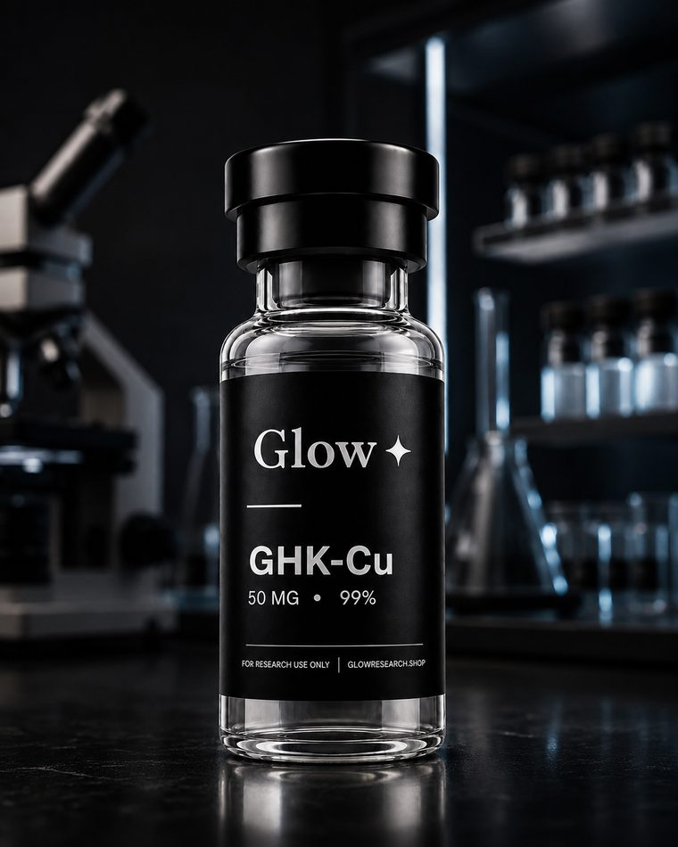
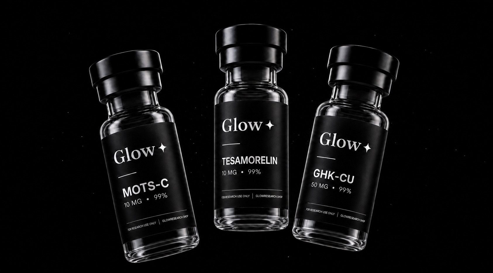
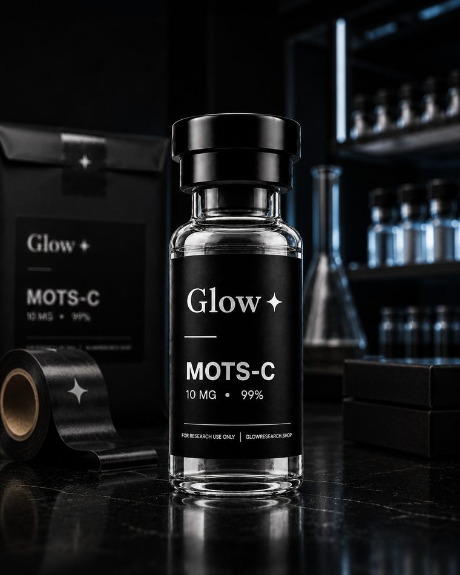
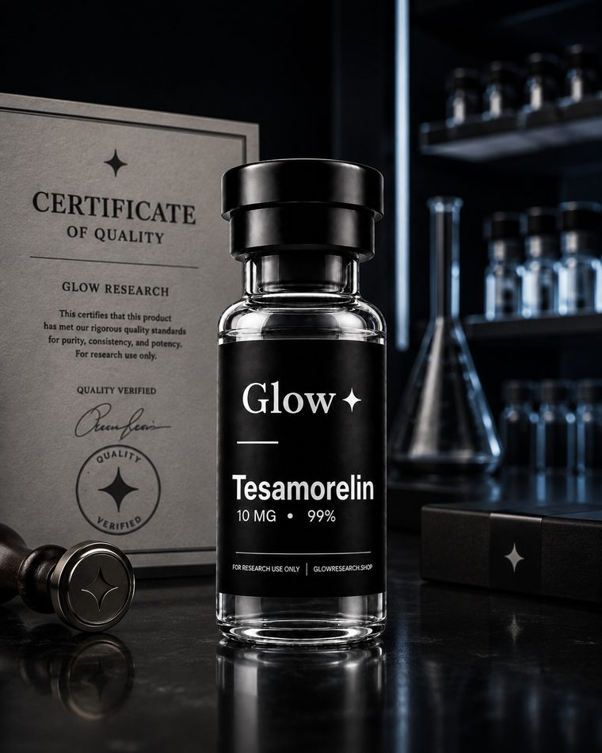

Testing
Third-party tested
Purity by HPLC, identity and quantity, run by an outside laboratory before a lot is listed.
See the certificates
High-purity research compounds, backed by third-party testing and clear documentation.
Avg. Purity
Batches Tested
Same-day Dispatch
No anonymous vials and no guesswork, just documented compounds with the paperwork to prove it.

Purity by HPLC, identity and quantity, run by an outside laboratory before a lot is listed.
See the certificates
Sealed, packed and handed to FedEx the same day when ordered by 1:00 PM Pacific, then tracked to your door.
Shipping details
Every vial ships against the lot number on the certificate published for that batch.
View COAsA plain padded envelope, nothing on the outside naming what is inside
Loss, damage or carrier delay. All sales are final once a vial ships
Card payments on Stripe's own encrypted form. We never see the number
Yes. Three analyses on every lot before it ships: purity by HPLC, identity and quantity. Some lots also get sterility and endotoxin testing, some do not, so read the certificate for the lot you have. We do not run appearance and solubility or heavy metals. An outside lab does all of it, so the certificate is not ours to write.
Every order ships the same day when ordered by 1:00 PM Pacific, otherwise the next dispatch day on FedEx 2-Day. Tracking follows within a day. United States only.
Always. Orders ship in a plain padded envelope, no branding, nothing on the outside naming what is inside, and checkout runs on Stripe’s own encrypted payment form, card only. Stripe handles and stores the card details, not us.
No. Not for use in humans or animals. Laboratory and in-vitro research only, sold to qualified buyers and institutions, not a drug or a supplement. We do not publish dosing or administration guidance and will not supply it if asked. The RUO Agreement covers what you accepted on the way in.
Every lot third-party tested, with a published certificate of analysis.
Shop Peptides